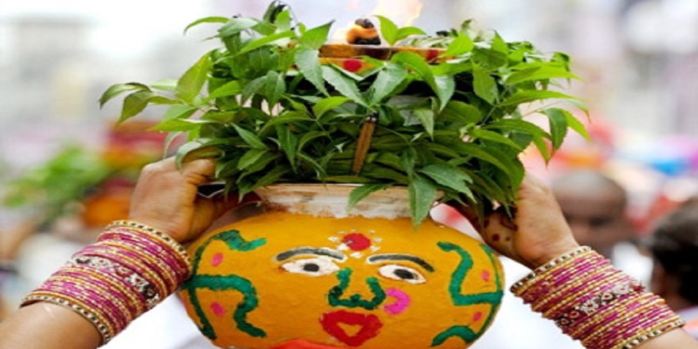
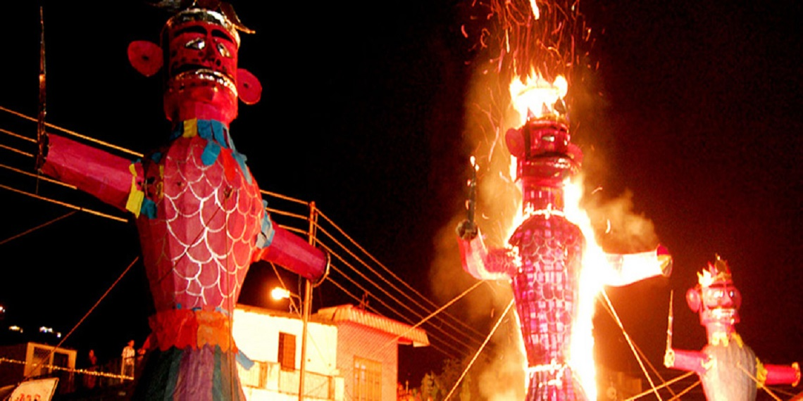
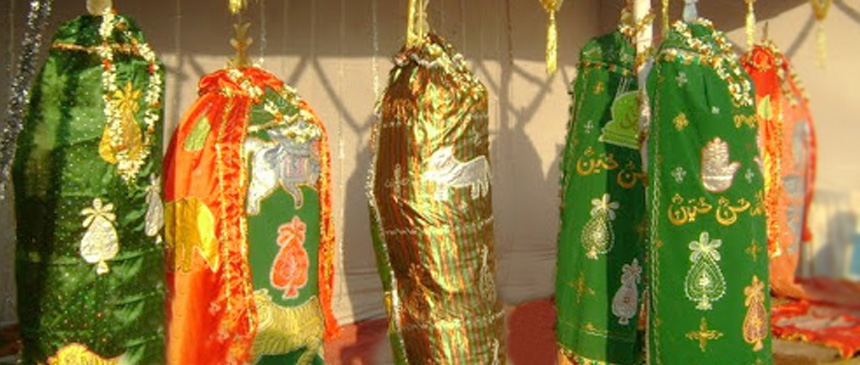
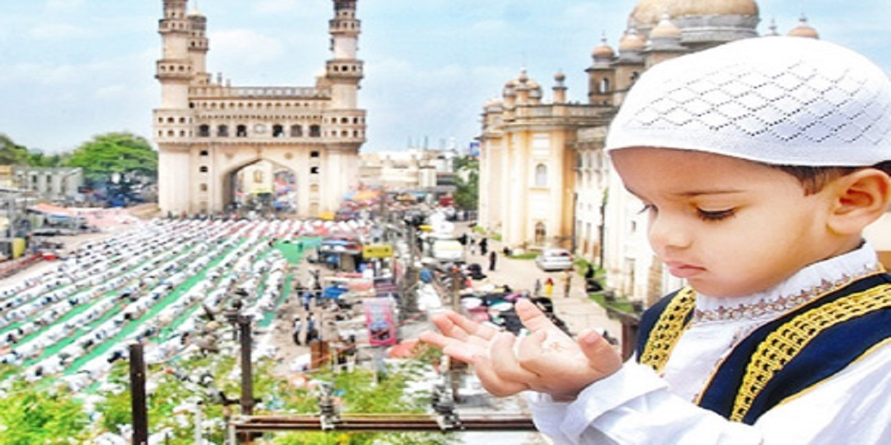
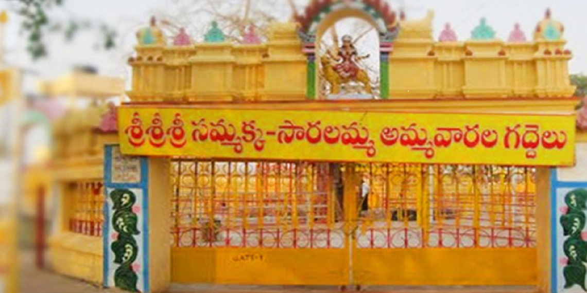

Bonalu
About
Bonalu is a Hindu Festival where Goddess Mahakali is worshiped. It is an annual festival celebrated in the twin Cities Hyderabad and Secunderabad
LOCAL FESTS

Bonalu
About
Bonalu is a Hindu Festival where Goddess Mahakali is worshiped. It is an annual festival celebrated in the twin Cities Hyderabad and Secunderabad

Dussehra
About
Vijayadashami, a festival that symbolizes the victory of good over evil, is celebrated with traditional fervor, devotion and gaiety across Telangana.

Peerla Panduga
About
Muharram, also called Peerla Panduga is an important festival in the state of Telangana. Muharram is a festival marked by processions.

Ramzan
About
Ramzan is the ninth month as per the Islamic Lunar calendar.Ramzan begins after the month of Shaban, when the new moon is sighted.

Sammakka Saarakka Jaathara
About
The Sammakka Saralamma shrine area in Warangal is reported to have been built during the 12th century.